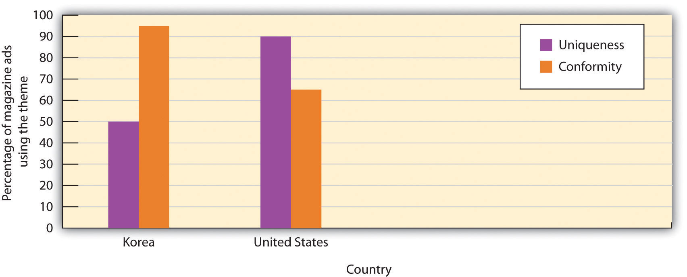

Although we have focused to this point on the situational determinants of conformity, such as the number of people in the majority and their unanimity and status, we have not yet considered the question of which people are likely to conform and which people are not. In this section we will consider how personality variables, gender, and culture influence conformity.
Even in cases in which the pressure to conform is strong and a large percentage of individuals do conform (such as in Solomon Asch’s line-judging research), not everyone does so. There are usually some people willing and able to go against the prevailing norm. In Asch’s study, for instance, despite the strong situational pressures, 24% of the participants never conformed on any of the trials.
People prefer to have an “optimal” balance between being similar to, and different from, others (Brewer, 2003).Brewer, M. B. (2003). Optimal distinctiveness, social identity, and the self. In M. R. Leary & J. P. Tangney (Eds.), Handbook of self and identity (pp. 480–491). New York, NY: Guilford Press. When people are made to feel too similar to others, they tend to express their individuality, but when they are made to feel too different from others, they attempt to increase their acceptance by others. Supporting this idea, research has found that people who have lower self-esteem are more likely to conform in comparison with those who have higher self-esteem. This makes sense because self-esteem rises when we know we are being accepted by others, and people with lower self-esteem have a greater need to belong. And people who are dependent on and who have a strong need for approval from others are also more conforming (Bornstein, 1992).Bornstein, R. F. (1992). The dependent personality: Developmental, social, and clinical perspectives. Psychological Bulletin, 112, 3–23.
Age also matters, such that individuals who are either younger or older are more easily influenced than individuals who are in their 40s and 50s (Visser & Krosnick, 1998).Visser, P. S., & Krosnick, J. A. (1998). The development of attitude strength over the life cycle: Surge and decline. Journal of Personality and Social Psychology, 75, 1389–1410. People who highly identify with the group that is creating the conformity are also more likely to conform to group norms, in comparison to people who don’t really care very much (Jetten, Spears, & Manstead, 1997; Terry & Hogg, 1996).Jetten, J., Spears, R., & Manstead, A. S. R. (1997). Strength of identification and intergroup differentiation: The influence of group norms. European Journal of Social Psychology, 27, 603–609; Terry, D., & Hogg, M. (1996). Group norms and the attitude-behavior relationship: A role for group identification. Personality and Social Psychology Bulletin, 22, 776–793.
However, although there are some differences among people in terms of their tendency to conform (it has even been suggested that some people have a “need for uniqueness” that leads them to be particularly likely to resist conformity; Snyder & Fromkin, 1977),Snyder, C. R., & Fromkin, H. L. (1977). Abnormality as a positive characteristic: The development and validation of a scale measuring need for uniqueness. Journal of Abnormal Psychology, 86(5), 518–527. research has generally found that the impact of person variables on conformity is smaller than the influence of situational variables, such as the number and unanimity of the majority.
Several reviews and meta-analyses of the existing research on conformity and leadership in men and women have now been conducted, and so it is possible to draw some strong conclusions in this regard. In terms of conformity, the overall conclusion from these studies is that that there are only small differences between men and women in the amount of conformity they exhibit, and these differences are influenced as much by the social situation in which the conformity occurs as by gender differences themselves. For instance, in Milgram’s studies he found no differences in conformity between men and women.
On average, men and women have different levels of self-concern and other-concern. Men are, on average, more concerned about appearing to have high status and may be able to demonstrate this status by acting independently from the opinions of others. On the other hand, and again although there are substantial individual differences among them, women are, on average, more concerned with connecting to others and maintaining group harmony. Taken together, this means that, at least when they are being observed by others, men are likely to hold their ground, act independently, and refuse to conform, whereas women are more likely to conform to the opinions of others in order to prevent social disagreement. These differences are less apparent when the conformity occurs in private (Eagly, 1978, 1983).Eagly, A. H. (1978). Sex differences in influenceability. Psychological Bulletin, 85, 86–116; Eagly, A. H. (1983). Gender and social influence: A social psychological analysis. American Psychologist, 38, 971–981.
The observed gender differences in conformity have social explanations—namely that women are socialized to be more caring about the desires of others—but there are also evolutionary explanations. Men may be more likely to resist conformity to demonstrate to women that they are good mates. Griskevicius, Goldstein, Mortensen, Cialdini, and Kenrick (2006)Griskevicius, V., Goldstein, N. J., Mortensen, C. R., Cialdini, R. B., & Kenrick, D. T. (2006). Going along versus going alone: When fundamental motives facilitate strategic (non)conformity. Journal of Personality and Social Psychology, 91, 281–294. found that men, but not women, who had been primed with thoughts about romantic and sexual attraction were less likely to conform to the opinions of others on a subsequent task than were men who had not been primed to think about romantic attraction.
In addition to the public versus private nature of the situation, the topic being discussed also is important, such that both men and women are less likely to conform on topics that they know a lot about, in comparison with topics on which they feel less knowledgeable (Eagly & Chravala, 1986).Eagly, A. H., & Chravala, C. (1986). Sex differences in conformity: Status and gender-role interpretations. Psychology of Women Quarterly, 10, 203–220. When the topic is sports, women tend to conform to men, whereas the opposite is true when the topic is fashion. Thus it appears that the small observed differences between men and women in conformity are due, at least in part, to informational influence.
Because men have higher status in most societies, they are more likely to be perceived as effective leaders (Eagly, Makhijani, & Klonsky, 1992; Rojahn & Willemsen, 1994; Shackelford, Wood, & Worchel, 1996).Eagly, A. H., Makhijani, M. G., & Klonsky, B. G. (1992). Gender and evaluation of leaders: A meta-analysis. Psychological Bulletin, 111, 3–22; Rojahn, K., & Willemsen, T. M. (1994). The evaluation of effectiveness and likability of gender-role congruent and gender-role incongruent leaders. Sex Roles, 30, 109–119; Shackelford, S., Wood, W., & Worchel, S. (1996). Behavioral styles and the influence of women in mixed-sex groups. Social Psychology Quarterly, 59, 284–293. And men are more likely to be leaders in most cultures. For instance, in the current U.S. Senate, 83% of the members are men. The percentages also favor men in the U.S. House of Representatives (84%) and the Supreme Court (66%). Similar differences are found in the legislatures of almost all countries. There are also more men than women in leadership roles, and particularly in high-level administrative positions, in many different types of businesses and other organizations. Women are not promoted to positions of leadership as fast as men are in real working groups, even when actual performance is taken into consideration (Geis, Boston, & Hoffman, 1985; Heilman, Block, & Martell, 1995).Geis, F. L., Boston, M. B., and Hoffman, N. (1985). Sex of authority role models and achievement by men and women: Leadership performance and recognition, Journal of Personality and Social Psychology, 49, 636–653; Heilman, M. E., Block, C. J., & Martell, R. (1995). Sex stereotypes: Do they influence perceptions of managers? Journal of Social Behavior and Personality, 10, 237–252.
Men are also more likely than women to emerge and act as leaders in small groups, even when other personality characteristics are accounted for (Bartol & Martin, 1986; Megargee, 1969; Porter, Geis, Cooper, & Newman, 1985).Bartol, K. M., & Martin, D. C. (1986). Women and men in task groups. In R. D. Ashmore & F. K. Del Boca (Eds.), The social psychology of female-male relations. New York, NY: Academic Press; Megargee, E. I. (1969). Influence of sex roles on the manifestation of leadership. Journal of Applied Psychology, 53, 377–382; Porter, N., Geis, F. L., Cooper, E., & Newman, E. (1985). Androgyny and leadership in mixed-sex groups. Journal of Personality and Social Psychology, 49, 808–823. In one experiment, Nyquist and Spence (1986)Nyquist, L. V., & Spence, J. T. (1986). Effects of dispositional dominance and sex role expectations on leadership behaviors. Journal of Personality and Social Psychology, 50, 87–93. had pairs of same- and mixed-sex students interact. In each pair there was one highly dominant and one low dominant individual, as assessed by previous personality measures. They found that in pairs in which there was one man and one woman, the dominant man became the leader 90% of the time, but the dominant woman became the leader only 35% of the time.
Keep in mind, however, that the fact that men are perceived as effective leaders, and are more likely to become leaders, does not necessarily mean that they are actually better, more effective leaders than women. Indeed, a meta-analysis studying the effectiveness of male and female leaders did not find that there were any gender differences overall (Eagly, Karau, & Makhijani, 1995)Eagly, A. H., Karau, S. J., & Makhijani, M. G. (1995). Gender and the effectiveness of leaders: A meta-analysis. Psychological Bulletin, 117, 125–145. and even found that women excelled over men in some domains. Furthermore, the differences that were found tended to occur primarily when a group was first forming but dissipated over time as the group members got to know one another individually.
One difficulty for women as they attempt to lead is that traditional leadership behaviors, such as showing independence and exerting power over others, conflict with the expected social roles for women. The norms for what constitutes success in corporate life are usually defined in masculine terms, including assertiveness or aggressiveness, self-promotion, and perhaps even macho behavior. It is difficult for women to gain power because to do so they must conform to these masculine norms, and often this goes against their personal beliefs about appropriate behavior (Rudman & Glick, 1999).Rudman, L. A., & Glick, P. (1999). Feminized management and backlash toward agentic women: The hidden costs to women of a kinder, gentler image of middle-managers. Journal of Personality and Social Psychology, 77, 1004–1010. And when women do take on male models of expressing power, it may backfire on them because they end up being disliked because they are acting nonstereotypically for their gender. In an important U.S. Supreme Court case, a female account executive argued that she was denied promotion (although she was a top performer) because she acted too “masculine,” even though the same behaviors were required for the success of the male coworkers (Fiske, Bersoff, Borgida, Deaux, & Heilman, 1991).Fiske, S. T., Bersoff, D. N., Borgida, E., Deaux, K., & Heilman, M. E. (1991). Social science research on trial. The use of sex stereotyping research in Price Waterhouse v. Hopkins. American Psychologist, 46, 1049–1060.
One way that women can react to this “double-bind” in which they must take on masculine characteristics to succeed, but if they do they are not liked, is to adopt more feminine leadership styles, in which they use more interpersonally oriented behaviors such as agreeing with others, acting in a friendly manner, and encouraging subordinates to participate in the decision-making process (Eagly & Johnson, 1990; Eagly et al., 1992; Wood, 1987).Eagly, A. H., & Johnson, B. T. (1990). Gender and leadership style: A meta-analysis. Psychological Bulletin, 108, 233–256; Eagly, A. H., Makhijani, M. G., & Klonsky, B. G. (1992). Gender and evaluation of leaders: A meta-analysis. Psychological Bulletin, 111, 3–22; Wood, W. (1987). A meta-analytic review of sex differences in group performance. Psychological Bulletin, 102, 53–71. In short, women are more likely to take on a transformational leadership style than are men—doing so allows them to be effective leaders while not acting in an excessively masculine way (Eagly & Carli, 2007; Eagly, Johannesen-Schmidt, & van Egen, 2003).Eagly, A. H., & Carli, L. L. (2007). Through the labyrinth: The truth about how women become leaders. Boston, MA: Harvard Business School Press; Eagly, A. H., Johannesen-Schmidt, M. C., & van Engen, M. L. (2003). Transformational, transactional, and laissez-faire leadership styles: A meta-analysis comparing men and women. Psychological Bulletin, 129, 569–591.
In sum, women may conform somewhat more than men, although these differences are small and limited to situations in which the responses are made publicly. In terms of leadership effectiveness, there is no evidence that men, overall, make better leaders than do women. However, men do better as leaders on tasks that are “masculine” in the sense that they require the ability to direct and control people. On the other hand, women do better on tasks that are more “feminine” in the sense that they involve creating harmonious relationships among the group members.
In addition to gender differences, there is also evidence that conformity is greater in some cultures than others. Your knowledge about the cultural differences between individualistic and collectivistic cultures might lead you to think that collectivists will be more conforming than individualists, and there is some support for this. Bond and Smith (1996)Bond, R., & Smith, P. B. (1996). Culture and conformity: A meta-analysis of studies using Asch’s (1952b, 1956) line judgment task. Psychological Bulletin, 119(1), 111–137. analyzed results of 133 studies that had used Asch’s line-judging task in 17 different countries. They then categorized each of the countries in terms of the degree to which it could be considered collectivist versus individualist in orientation. They found a significant relationship, such that conformity was greater in more collectivist than in individualist countries.
Kim and Markus (1999)Kim, H., & Markus, H. R. (1999). Deviance or uniqueness, harmony or conformity? A cultural analysis. Journal of Personality and Social Psychology, 77, 785–800. analyzed advertisements from popular magazines in the United States and in Korea to see if they differentially emphasized conformity and uniqueness. As you can see in Figure 7.10 "Culture and Conformity", they found that while U.S. magazine ads tended to focus on uniqueness (“Choose your own view!” and “Individualize”) Korean ads tended to focus more on themes of conformity (“Seven out of 10 people use this product” and “Our company is working toward building a harmonious society”).
Figure 7.10 Culture and Conformity
Kim and Markus (1999) found that U.S. magazine ads tended to focus on uniqueness whereas Korean ads tended to focus more on conformity.
In summary, although the effects of individual differences on conformity tend to be smaller than those of the social context, they do matter. And gender and cultural differences can also be important. Conformity, like most other social psychological processes, represents an interaction between the situation and the person.
Conformity is usually quite adaptive overall, both for the individuals who conform and for the group as a whole. Conforming to the opinions of others can help us enhance and protect ourselves by providing us with important and accurate information and can help us better relate to others. Following the directives of effective leaders can help a group attain goals that would not be possible without them. And if only half of the people in your neighborhood thought it was appropriate to stop on red and go on green but the other half thought the opposite—and behaved accordingly—there would be problems indeed.
But social influence does not always produce conformity. If we feel that we have the choice to conform or not conform, we may well choose to do so in order to be accepted or to obtain valid knowledge. On the other hand, if we perceive that others are trying to force our conformity, the influence pressure may backfire, resulting in the opposite of what the influencer intends.
Consider an experiment conducted by Pennebaker and Sanders (1976),Pennebaker, J. W., & Sanders, D. Y. (1976). American graffiti: Effects of authority and reactance arousal. Personality and Social Psychology Bulletin, 2, 264–267. who attempted to get people to stop writing graffiti on the walls of campus restrooms. In some restrooms they posted a sign that read “Do not write on these walls under any circumstances!” whereas in other restrooms they placed a sign that simply said “Please don’t write on these walls.” Two weeks later, the researchers returned to the restrooms to see if the signs had made a difference. They found that there was much less graffiti in the second restroom than in the first one. It seems as if people who were given strong pressures to not engage in the behavior were more likely to react against those directives than were people who were given a weaker message.
When individuals feel that their freedom is being threatened by influence attempts and yet they also have the ability to resist that persuasion, they may experience psychological reactanceA strong motivational state that prevents conformity., a strong motivational state that prevents conformity (Brehm, 1966; Miron & Brehm, 2006).Brehm, J. (1966). A theory of psychological reactance. New York, NY: Academic Press; Miron, A. M., & Brehm, J. W. (2006). Reaktanz theorie—40 Jahre spärer. Zeitschrift fur Sozialpsychologie, 37, 9–18. doi: 10.1024/0044-3514.37.1.9. Reactance is aroused when our ability to choose which behaviors to engage in is eliminated or threatened with elimination. The outcome of the experience of reactance is that people may not conform at all and may even move their opinions or behaviors away from the desires of the influencer.
Reactance represents a desire to restore freedom that is being threatened. A child who feels that his or her parents are forcing him to eat his asparagus may react quite vehemently with a strong refusal to touch the plate. And an adult who feels that she is being pressured by a car salesman might feel the same way and leave the showroom entirely, resulting in the opposite of the salesman’s intended outcome.
Of course, parents are sometimes aware of this potential, and even use “reverse psychology”—for example, telling a child that she cannot go outside when they really want her to, hoping that reactance will occur. In the Broadway musical The Fantasticks, neighboring fathers set up to make one’s daughter and the other’s son fall in love with each other by building a fence between their properties. The fence is seen by the children as an infringement on their freedom to see each other, and as predicted by the idea of reactance, they ultimately fall in love.
In addition to helping us understand the affective determinants of conformity and of failure to conform, reactance has been observed to have its ironic effects in a number of real-world contexts. For instance, Wolf and Montgomery (1977)Wolf, S., & Montgomery, D. A. (1977). Effects of inadmissible evidence and level of judicial admonishment to disregard on the judgments of mock jurors. Journal of Applied Social Psychology, 7, 205–219. found that when judges give jury members instructions indicating that they absolutely must not pay any attention to particular information that had been presented in a courtroom trial (because it had been ruled as inadmissible), the jurors were more likely to use that information in their judgments. And Bushman and Stack (1996)Bushman, B. J., & Stack, A. D. (1996). Forbidden fruit versus tainted fruit: Effects of warning labels on attraction to television violence. Journal of Experimental Psychology: Applied, 2, 207–226. found that warning labels on violent films (for instance, “This film contains extreme violence—Viewer discretion advised”) created more reactance (and thus led participants to be more interested in viewing the film) than did similar labels that simply provided information (“This film contains extreme violence”). In another relevant study, Kray, Reb, Galinsky, and Thompson (2004)Kray, L. J., Reb, J., Galinsky, A. D., & Thompson, L. (2004). Stereotype reactance at the bargaining table: The effect of stereotype activation and power on claiming and creating value. Personality and Social Psychology Bulletin, 30, 399–411. found that when women were told that they were poor negotiators and would be unable to succeed on a negotiation task, this information led them to work even harder and to be more successful at the task.
Finally, within clinical therapy, it has been argued that people sometimes are less likely to try to reduce the harmful behaviors that they engage in, such as smoking or drug abuse, when the people they care about try too hard to press them to do so (Shoham, Trost, & Rohrbaugh, 2004).Shoham, V., Trost, S. E., & Rohrbaugh, M. J. (Eds.). (2004). From state to trait and back again: Reactance theory goes clinical. Mahwah, NJ: Lawrence Erlbaum. One patient was recorded as having reported that his wife kept telling him that he should quit drinking, saying, “If you loved me enough, you’d give up the booze.” However, he also reported that when she gave up on him and said instead, “I don’t care what you do anymore,” he then enrolled in a treatment program (Shoham et al., 2004, p. 177).Shoham, V., Trost, S. E., & Rohrbaugh, M. J. (Eds.). (2004). From state to trait and back again: Reactance theory goes clinical. Mahwah, NJ: Lawrence Erlbaum.
Following this paragraph are some examples of social influence and conformity. In each case, the person who is conforming has changed his or her behavior because of the expressed opinions or behaviors of another person. In some cases the influence of the others is more obvious; in other cases less so. Using the principles discussed in Chapter 1 "Introducing Social Psychology", first consider the likely role of the social situation versus the individual person. Did the person freely engage in the behavior, did the social situation force him to engage in the behavior, or was there some combination of both? Then consider the role of underlying human goals—concern for self and concern for others. Did the conformity occur primarily because the person wanted to feel good about himself or herself or because he or she cared for those around him or her? Then ask yourself about the role of cognition, affect, and behavior. Do you think the conformity was primarily behavioral, or did it involve a real change in the person’s thoughts and feelings?